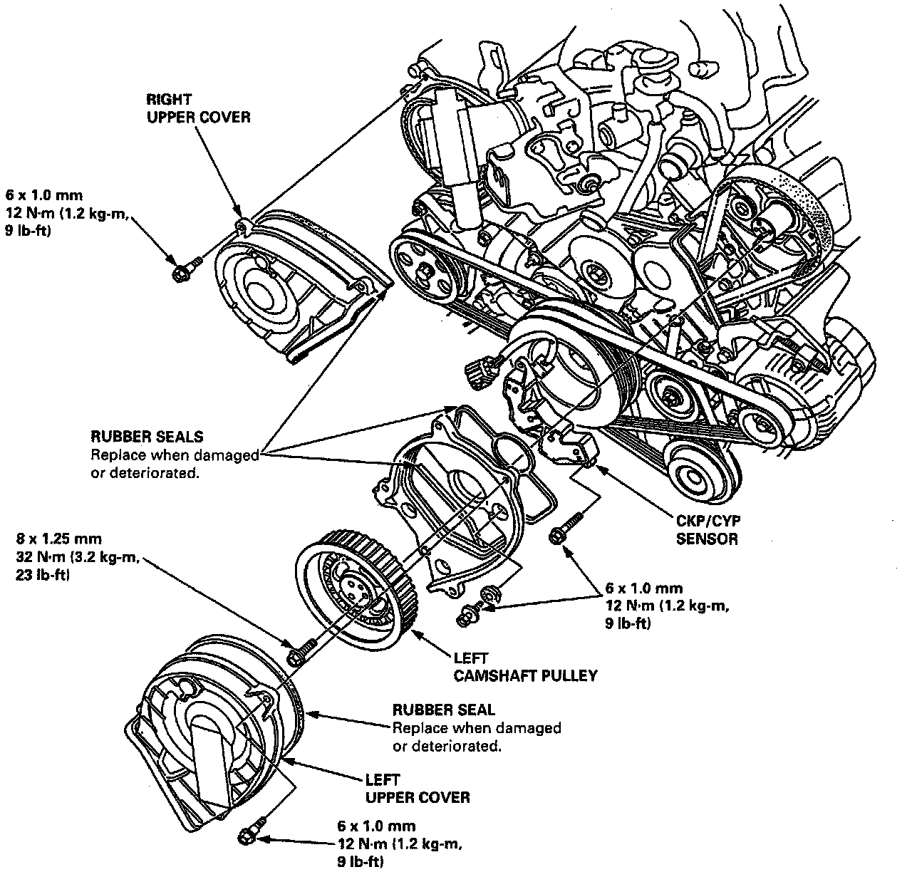
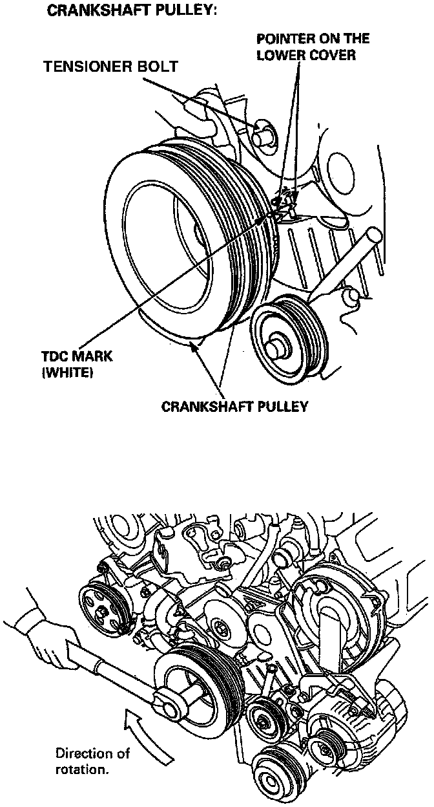

Crankshaft Position Sensor: Service and Repair
Sensor Removal And Installation:

1. Remove the damper from the center bracket.
Setting The Crankshaft To TDC:

2. Turn the crankshaft so that the NO.1 piston is at top dead center.
3. Remove the upper covers.
4. Remove the timing belt from the right and left camshaft pulleys.
5. Remove the left camshaft pulley.
6. Remove the left back cover.
7. Remove the CKP/CYP sensor from the left cylinder head.
8. Install the CKP/CYP sensor in the reverse order of removal. Refer to Timing Belt Removal.